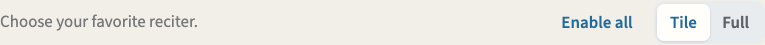
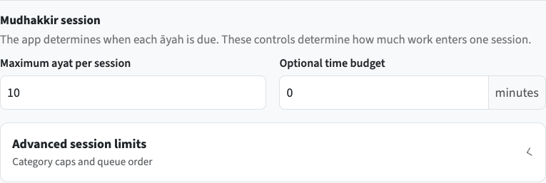

These entries come from the expanded Settings panels. The shared CSS hooks live in the foundation stylesheet. Use them inside ux-system alongside the app’s Bootstrap form markup.
Panel header & toolbar

Use ux-panel-header for guidance or a count alongside contextual actions. At 700 px and below, stack the actions beneath the description. Reading catalogs reuse the text action and inset selector. Email preferences uses the same header with a Midnight secondary link.
Nested disclosure

Use a trailing chevron for both advanced fields and language groups. Advanced limits use native details. A catalog group uses a button with aria-expanded and aria-controls linked to its collapsible list. Keep a single-language catalog flat. See the advanced limits specimen.
Field grid, labels & units

Wrap the fields in ux-fields. Use ux-field-grid for related inputs and selects. Columns fit the available space and align controls below labels of different lengths. Number inputs, select menus, and unit suffixes share a 2.65 rem minimum height. Keep the unit visible next to its value.
Switches & dependent settings
Use the same Bootstrap switch inside ux-fields for catalog inclusion, Drive copies, and auto-recharge. The checked track uses the app’s dark accent blue. Label card switches with the item name and standalone switches with their effect. For a visible label, leave a 0.5 rem gap after the track and align wrapped lines under the first word.
Drive’s switch saves immediately. Auto-recharge groups its switch, threshold, and package under one Save action. Protected catalog entries keep their checked and disabled states. See catalog preferences.
Connection status & actions

Drive combines the existing action hierarchy with a status message. Show Connect when available. Once connected, show Import, Open folder, and Disconnect. Related actions wrap on small screens. A divider separates the optional copies preference from the connection controls.
Inset cards, balance & activity

Apply ux-inset-card to give a balance, scheduling group, or advanced disclosure the same surface and border. In billing, pair the balance with Buy, keep auto-recharge in a separate form group, and show recent point changes with amount, reason, and date. With an empty ledger, show “No point activity yet.”